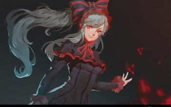
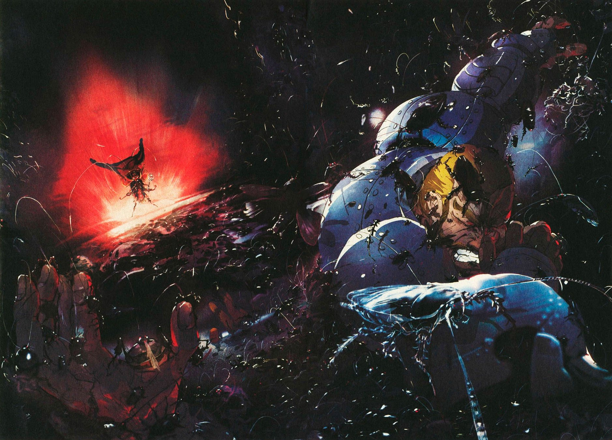
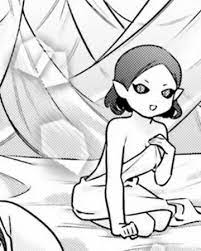
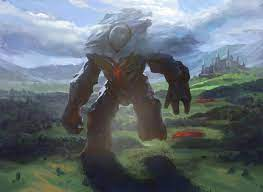
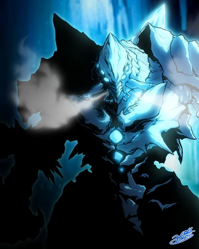

1° ~ 3° Piso: Tumba
Este piso es un Catacumbas, las cámaras subterráneas de sepultura y envuelto en la oscuridad donde varias docenas de muertos vivientes vagabundeaban en la oscuridad.
-
Guardian de piso: Shalltear Bloodfallen
Shalltear Bloodfallen (シャルティア・ブラッドフォールン, Sharutia Buraddofōrun) es una Vampiresa Real y la guardiana del primer al tercer piso en la Gran Tumba de Nazarick.
Shalltear es una vampiresa de corta estatura y tiene la apariencia de una exuberante chica de catorce años. Es descrita como una "belleza real", tiene la piel pálida brillante, ojos rojos seductivos, y rasgos faciales finos. Su cabello plateado está peinado en una cola de caballo, dejando que otros vean su cara
Lleva un vestido de noche con colores negros junto a una gran y pesada falda. En la parte superior del torso tiene una cinta adornada con encajes y una chaqueta corta media. Lleva puesto unos largos guantes de encaje, con lo que no muestra casi nada de piel. Sin embargo, sus pechos son falsos y son completamente planos, similares a los de un chico. Ella los cubre con una cantidad excesiva de rellenadores de busto.

En su forma de Vampiresa Real, cambia dramáticamente. Su boca se vuelve circular y abierta como de una lamprea, con una larga lengua saliéndole. Sus ojos se vuelven inhumanos e intensamente brillantes. Su forma se vuelve encorvada y algo simio, con garras mortales en ambos pies y manos. Una aura misteriosa también rodea su cuerpo. En esta forma, viste un vestido andrajoso más simple.
Personalidad:
Shalltear tiene una personalidad muy coqueta y es muy abierta con sus preferencias sexuales, provocando incomodidad a otros. A pesar de su aparente falta de vergüenza, ella puede ser bastante inocente acerca de ciertas cosas. Tiene complejo acerca de su pequeña figura, por lo que pretende cubrirlo con rellenadores de busto.
Como Vampiresa Real, Shalltear es extremadamente orgullosa y toma su posición como guardiana del piso muy en serio. No tiene paciencia para el fracaso y, a menudo estalla en ataques de rabia en situaciones desfavorables. No dudará en matar a cualquier sirviente que la decepcione; sin embargo, no castigara a otros por fallar en tareas que le son imposibles desde el comienzo.
Shalltear es completamente leal a Ainz y es también una rival de amores con Albedo por sus afectos. Recibe gran alegría en ser capaz de demostrar su valía y fantasea con el elogio que espera recibir. Cuando una situación no va a su favor, entra en pánico sobre el regaño que cree que va a recibir.
-
Cápsula Negra:
Residencia del Kyouhukou . Ubicado en el segundo piso.
Es un sitio lleno totalmente de cucarachas (A las que trata como sus súbditos), hay tantas que pueden llegar a tapar hasta la cintura a un ser humano.
 -
Puente de cuerda abandonada :
Está sostenido por cuerdas que parecían estar a punto de romperse. Las tablas debajo de sus pies estaban podridas, y donde algunos nudos se habían soltado, las tablas se habían caído, no dejando nada, sino espacio vacío donde deberían haber estado. Debajo del puente estaban las siluetas de innumerables cadáveres.
-
Grave Vault of Adipocere:
Residencia de Shalltear. Ubicado en el segundo piso.
La Cámara Adipocere es el único lugar donde Shalltear suele residir con sus concubinas no muertas, como las Novias Vampiro . Una atmósfera erótica rodea esta sala, ya que tiende a escuchar el sonido de varias mujeres riendo y gimiendo lascivamente desde la distancia.
También es donde Shalltear cumple con su deber de mantener la vigilancia de la Gran Tumba de Nazarick bajo la orden de Ainz Ooal Gown .
- Capilla Subterránea sin Ventanas: La capilla tiene aproximadamente cien metros de ancho y está completamente apagada.
4 ° Piso: Lago Subterráneo
Este piso es un lago subterráneo con una caverna. En el pasado, antes de la conquista de la tumba de Ainz Ooal Gown, el jefe de este piso era un murciélago blanco gigante.
-
Guardian del Piso: Gargantua
Gargantua (ガ ル ガ ン チ ュ ア) es el Guardián del cuarto piso de la Gran Tumba de Nazarick . A diferencia de los otros Guardianes, no es un PNJ personalizado sino un bono ganado por Ainz Ooal Gown .
5 ° Piso: Glaciar
Este piso es una amplia área llena de numerosos icebergs. Fenómenos climáticos como la nieve y la nube están presentes aquí. Solía haber una penalización de área que causaba lentitud y producía daños de tipo hielo, pero se apagaba para ahorrar costos en mantenimiento después de la teletransportación.
-
Guardian del Piso: Cocytus
Cocytus (コキュートス, Kokyūtosu) es un guardián del quinto piso en la Gran Tumba de Nazarick, es un híbrido entre una mantis y una hormiga.
Con un tamaño corporal enorme de 2.5 m, Cocytus tiene la apariencia de un insecto que camina sobre dos pies: Una fusión entre una mantis y una hormiga.

Con una cola dos veces más larga que su altura, Cocytus está cubierto de espinas puntiagudas como carámbanos y tiene una mandíbula fuerte que puede romper fácilmente las manos de las personas. Dos de sus manos sostienen una alabarda plateada, mientras que las dos manos restantes sostienen una maza que emite luz negra y una vaina de forma torcida que parece ser una espada ancha. Con un aire frío e impresionante, la armadura de hueso endurecido azul pálido exuda polvo de diamante como luz brillante. Sus hombros y espalda parecen icebergs levantados.
Personalidad:
Cocytus tiene una personalidad guerrera y respeta a cualquiera que tenga espíritu de lucha y corazón de guerrero. Como guardián del piso, está a cargo de la defensa marcial de Nazarick. Cocytus es leal a una falla. Como se muestra cuando impidió a Demiurge, bajo la orden de Ainz, interferir en la pelea de Ainz contra Shalltear a pesar de que también él temía la posibilidad de perder a su maestro.
Un guerrero de corazón, le gusta una buena batalla y tiene un sentido del honor. A diferencia de sus colegas aislacionistas y xenófobos, él es más receptivo al permitir que los forasteros se unan a Nazarick. Aunque se enorgullece de su posición como defensor de Nazarick, tiene algo de envidia de sus compañeros Guardianes de Piso. Se compara a sí mismo como la "espada" de Ainz Ooal Gown, que ejecuta los deseos de su amo y piensa que la única forma en que podría demostrar su valía a Ainz es derrotando realmente a las fuerzas invasoras que serían una amenaza para Nazarick. A Cocytus no le gusta pedir ayuda para salvar la cara, pero cuando surja la necesidad, dejará de lado su orgullo para cumplir su tarea.